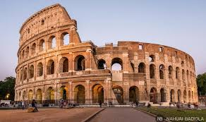
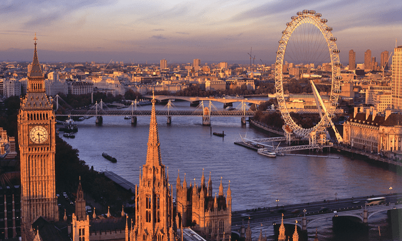

Paris, patrimonio inmaterial de la humanidad
Paris ha sido elegida ciudad patrimonio inmaterial de la humanidad por
sus bellos monumentos y su variada gastronomía. Además, la paz que se
respira en sus calles hace que sean muchos los turistas que elijan esta ciudad
como destino para las vacaciones.
No obstante, tras el reciente atentado terrorista
a la Torre Eiffel muchos países están presentando quejas al comité internacional
ya que consideran que París sin su torre no es más que calles tristes.
El comité
informará de su decisión en breves.
Ovejas en El Escorial

Cuando los primeros visitantes de la mañana fueron a entrar a
El Escorial se vieron sorprendidos por un rebaño de ovejas que se
encontraba dentro. Desde las taquillas notaban un olor a granja,
pero pensaban que se trataba de algún granjero que quería visitar
también tal monumento.
Enseguida fueron alertados los bomberos
para desalojar a los animales y unas ambulancias para tratar a
las personas que habían quedado en shock tras el suceso.
¿Volverán los gladiadores a Roma?
El nuevo gobierno de Fizzeragi plantea ante el congreso la posibilidad
de volver a celebrar luchas de gladiadores en el Colisseo. Muchos de los
diputados están de acuerdo con la propuesta y ya han encargado a los mejores
herreros su armadura de gladiador.
Dado el apoyo que ha tenido en el congreso,
el gobierno se está planteando financiar la construcción de coliseos en
otras ciudades y países para convertirlo en un deporte internacional que pueda competir
incluso en la olimpiadas.
Se piensa que con este cambio, la economía
de la ciudad mejorará, ya que el declive del turismo ha provocado el cierre
del Colisseo como atracción turística.
En Lisboa todo se hace cuesta arriba

La huelga de los maquinistas de tren en Lisboa se amplia toda esta semana.
Se quejan al gobierno de las elevadas cuestas por las que
tienen que subir los trenes a unas velocidades tan bajas que provoca que el tren
se vaya cuesta abajo.
Además, estos trabajadores tienen que sufrir la presión
de los pasajeros que se quejan diciendo frases como: "venga, que no llego a la esteticién",
"yo subiría mejor esa cuesta", etc.
La solución que plantean los trabajadores
es desalojar la ciudad durante el año 2019 para así poder remodelarla y hacer una Lisboa
plana. El próximo viernes maquinistas y gobernadores se reunirán para hablar del tema.
La salchicha más grande para rememorar a los Santos

Durante la festividad de todos los Santos se ha celebrado en Berlín el concurso de
la salchicha más grande.Los participantes debían de cocinar la salchicha más grande que
pudieran y un jurado muy profesional las juzgaría todas delante de la Puerta de Bradenburgo.
El ganador fue un hombre de 42 años que logró crear una salchicha de 13 metros de largo
y tuvo que transportarla en camión con la ayuda de una grúa para no romperla.
El ayuntamiento
quiere agradecer la participación de tantas personas, casi 5.000. El jurado tuvo que ver y probar tantas
salchichas que uno de ellos fue obligado a acudir al hospital, pero se encuentra fuera de peligro.
Denuncias multitudinarias en Londres
La tensión crece en Londres con las obras del Big Ben. Muchos turistas han denunciado
a la Reina de Inglaterra por poseer en sus terrenos una obra de arte como esa y
mantenerlo en obras durante tanto tiempo.
La gente está depositando en la base del
monumento relojes que traen desde su casa y carteles diciendo: "este no me da la hora como
lo hacía él", refiriéndose al Big Ben.